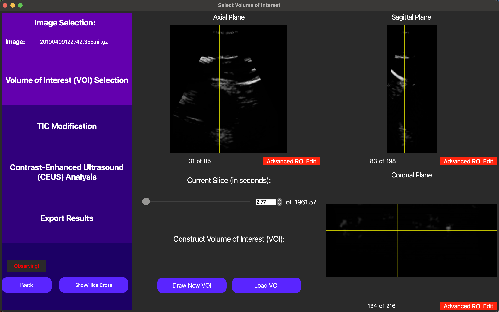
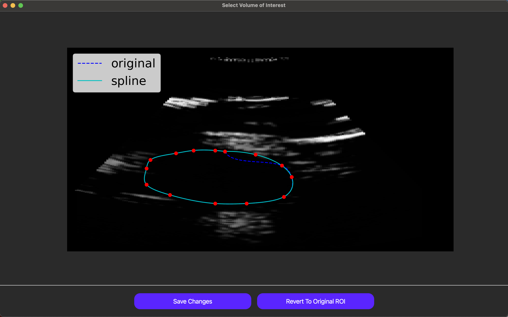
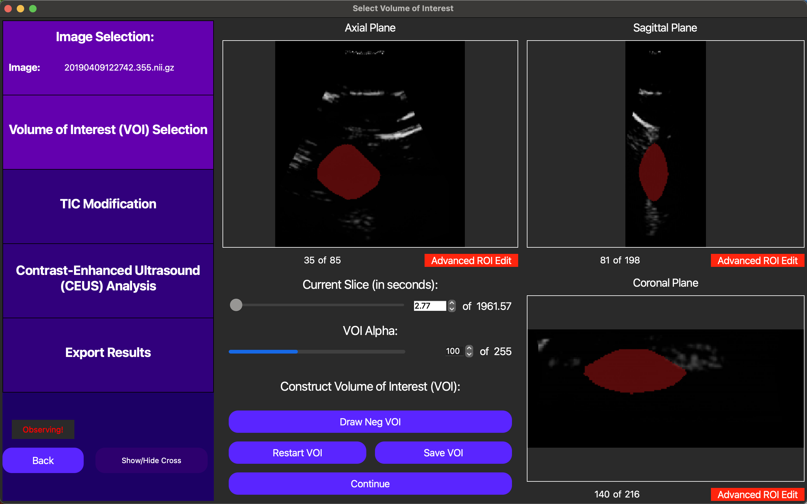
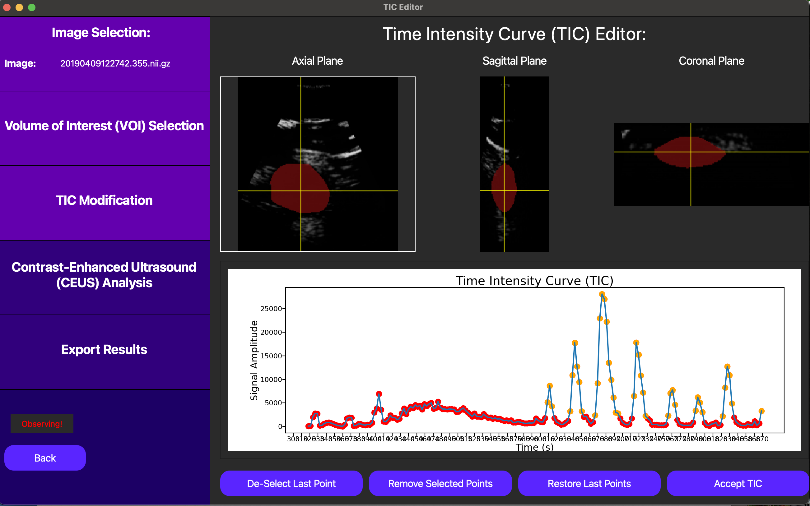
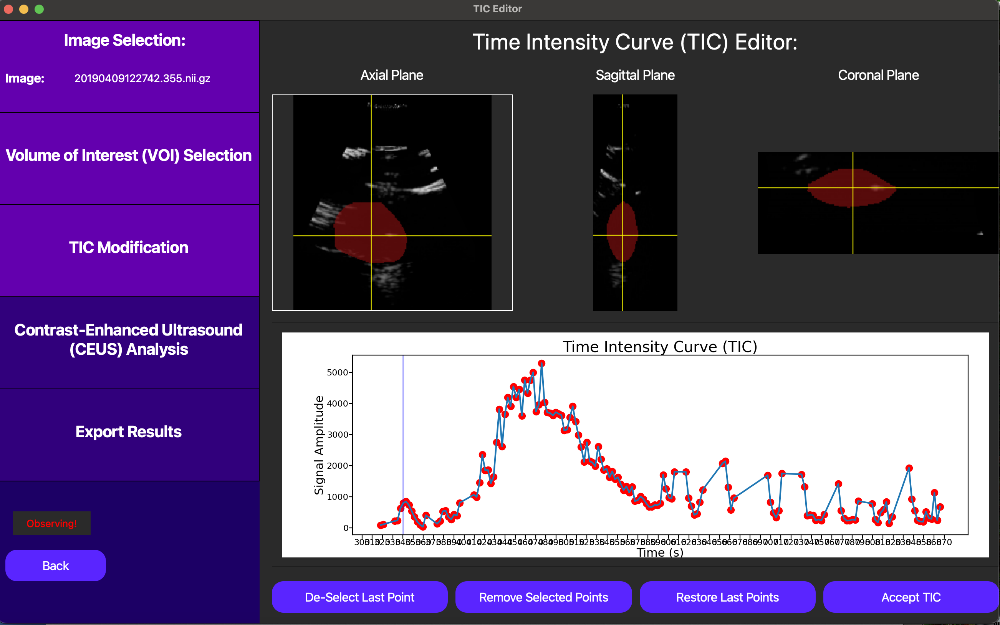
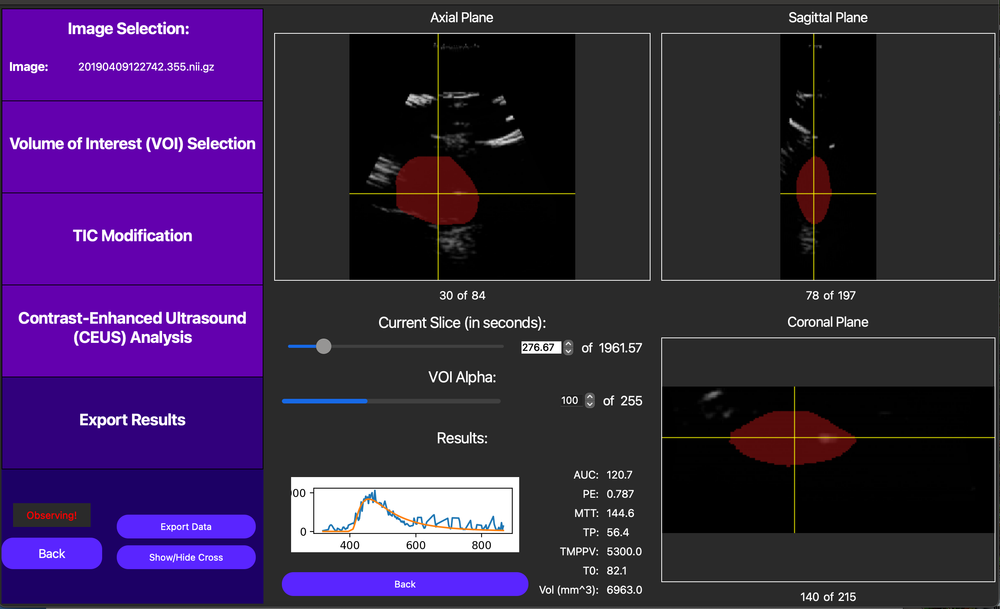

3D DCE-US GUI Example
Overview
This tutorial is a sample walkthrough of time intensity curve (TIC) analysis of a bolus injection captured in a 3D dynamic contrast enhanced ultrasound (DCE-US) cine loop. This example uses the optional motion compensation feature on data stored in NIfTI format. For reference, the sample data used in this example can be found here.
Image Selection
After opening the QuantUS GUI, we can begin by selecting 3D Dynamic Contrast-Enhanced Ultrasound (DCE-US) from the main menu. From here, we can select the NIFTI button to choose the appropriate parser for this set of analysis. Once we input the B-Mode (optional) and DCE-US cine loops, we click Generate Image to parse the data.
After the ultrasound parser loads, the cine loops will be displayed in the main window, as shown below.
{kind=link}
Each 3D frame can be navigated by pressing the GUI so that the label that says Observing! above moves to navigating and then scrolling around different locations of each axis. We recommend starting navigation with the yellow crosshair enabled as shown above, but it may be useful to turn this off as well using the Show/Hide Cross button.
Volume of Interest Selection
Following the analysis progression on the left side of the GUI, we now move to Volume of Interest (VOI) selection. The VOI determines which segmentation of the inputted image we will use to compute the TIC in our analysis.
On the GUI, the Draw New VOI button enables us to draw a free-handed spline to define the VOI. This works by drawing at least one free-handed region of interest (ROI) in each axis, and then merging them together using the Interpolate VOI button.
Individual ROIs can also be fine-tuned using the Advanced ROI Edit button for the relevant axis. Note this feature is only accessible when this button is green instead of red. As shown below, in this feature, the user can drag points used to define the ROI to adjust the ROI itself dynamically.
{kind=link}
Finally, once an original VOI has been drawn, the user can draw smaller VOIs within the original VOI to create holes in the VOI, excluding regions of the image that are not relevant to the analysis.
Once we are satisfied with the VOI, it can be saved and reloaded during another analysis run using the Save VOI and Load VOI buttons. To compute the TIC on this VOI, we can click the Continue button, as shown below.
{kind=link}
TIC Modification
On this screen, we start with the option of manually selecting a t0 for the TIC analysis, or automatically selecting one later. In this context, t0 corresponds to the start point we use when we fit a lognormal curve to the TIC data to quantitatively model the bolus injection. In this case, we opt to automatically select t0 later, as this will be optimized for us.
{kind=link}
In this case, since we don’t have the option of motion compensation, we can eliminate points from the TIC to exclude frames which most likely don’t follow the underlying tissue we selected in the original VOI. This can be checked clicking a point on the TIC plot in question, and then looking at the corresponding DCE-US frame in the cine loop above the TIC plot. Below, notice how excluding noisy points can help us isolate the bolus injection in the TIC, significantly improving the quality of our analysis.
{kind=link}
Finally, we can click the Accept TIC button to fit a lognormal curve to our modified TIC and view our results.
Analysis Results
After performing the lognormal curve fitting, the area under the curve (AUC), peak enhancement (PE), time to peak (TP), mean transit-time (MTT), t0, and ROI area are displayed by pressing the Show TIC button in the new screen. A visual of our curve fit is also displayed, as shown below.
{kind=link}
Also, note an externally computed parametric map can be displayed using the Load Parametric Map button. This operation is too computationally demanding to be included in this GUI, but externally computed maps will break the VOI into voxels and run TIC analysis on each voxel to create a parametric map. Note the TIC for each of these voxels must be unmodified, so this feature is best used for non-noisy data. This feature is useful for visualizing the spatial relationships between the TIC parameters. For more resources to help with creating these maps, please reach out to our developers.
Finally, we can save the TIC parameters for the entire ROI into a CSV file by first pressing the Export Data button and then linking a CSV file to our analysis runs, which can store data from multiple analyses. A CLI is also currently under development to streamline this pipeline using batch processing.